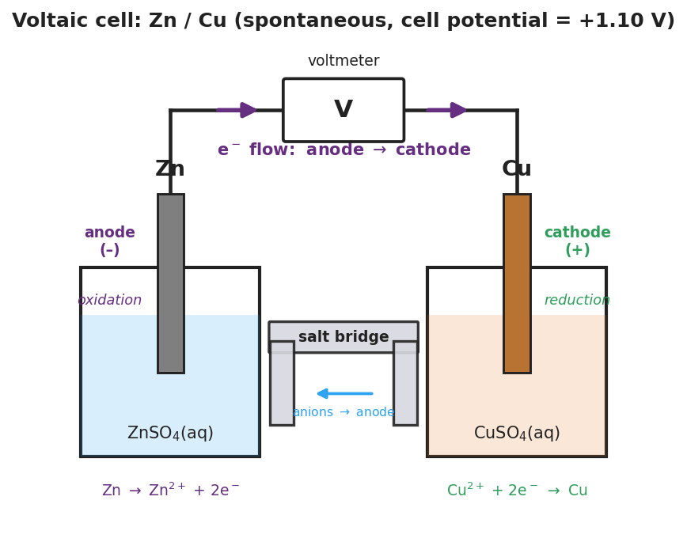

01 Phenomenon
Your teacher pushes a strip of copper and a strip of zinc into a lemon, connects them to a voltmeter, and the needle climbs to almost a full volt. No outlet, no charger — a piece of fruit is producing electricity. Wire a few cells together and a small LED lights up. But if you leave it connected long enough, the voltage fades and the light dies. A fresh AA battery and a dead one look identical on the outside, yet only one runs a motor.
02 Driving question
How does a battery actually produce electricity, and why do batteries eventually die?
03 Notice & wonder
| I notice… | I wonder… |
|---|---|
Turn & Talk #1: The electrons have to travel from one metal to the other through the wire. In which direction are they moving — from the zinc to the copper, or the other way? Write your prediction and your reasoning.
04 Initial model
You will build a real cell: a zinc strip in ZnSO₄(aq) and a copper strip in CuSO₄(aq), wired through a voltmeter and joined by a salt bridge.
Record your measurements:
| Measurement | Reading |
|---|---|
| Voltage before the salt bridge is connected | V |
| Voltage after the salt bridge is connected | V |
| Which metal is the voltmeter’s positive (red) lead clipped to? |
Before your teacher names any parts, draw an arrow on the diagram below showing which way electrons move through the wire, and write the half-reaction happening at each metal.
| Metal | Half-reaction (oxidation or reduction?) |
|---|---|
| Zinc (Zn) | |
| Copper (Cu) |
Through the external wire, electrons flow from the _______________ to the _______________.
What was your evidence for that direction? _______________________________________________
05 Investigate
Part 1 — Build and observe
Set up the cell with your group. Connect everything except the salt bridge first; read the voltmeter. Then lay the salt bridge across and read it again.
What did the voltmeter read before the salt bridge was connected? _______________ V
What did it read after? _______________ V
What does this tell you about whether the circuit was complete before the salt bridge was added? _______________________________________________
Part 2 — What does each part do?
Use your observations to reason about the role of each part of the cell.
| Part | What you observed | What you think it does |
|---|---|---|
| Zinc electrode | (gains/loses mass?) | |
| Copper electrode | (gains/loses mass? color change?) | |
| Salt bridge | (voltage with vs. without) | |
| External wire | (carries what?) |
Part 3 — Reading the labeled cell
Study the diagram below.

Which metal is the anode (where oxidation happens)? _______________
Which metal is the cathode (where reduction happens)? _______________
Does the electron-flow arrow in the figure point the same direction as the arrow you drew in your Initial Model? _______________
06 Make it make sense
Answer each question using evidence from your build and the diagram.
A classmate says, “Electrons travel through the salt bridge to get from the zinc to the copper.” Is this correct? If not, what actually travels through the salt bridge, and what travels through the wire?
- Correct or incorrect? _______________
- What travels through the wire: _______________________________________________
- What travels through the salt bridge: _______________________________________________
In your cell, the zinc electrode slowly dissolves and the copper electrode gains a reddish coating.
- Which electrode is the anode? _______________ Why? _______________________________________________
- Write the half-reaction at the zinc: _______________________________________________
- Write the half-reaction at the copper: _______________________________________________
Two students build a cell using two copper strips in two beakers of CuSO₄(aq), joined by a salt bridge. The voltmeter reads 0 V.
- Why does this cell produce no voltage? _______________________________________________
- What would they need to change to make it work? _______________________________________________
Your teacher connects a power supply and forces current backward through a fresh cell to plate copper onto a steel key.
- Is this a voltaic cell or an electrolytic cell? _______________
- Is the reaction being driven spontaneous or non-spontaneous? _______________
- Where is the energy coming from in this case? _______________________________________________
07 Key vocabulary
- anode / cathode
- the two electrodes of an electrochemical cell: the **anode** is where oxidation occurs (electrons leave the electrode; the electrode loses mass in a metal cell), and the **cathode** is where reduction occurs (electrons arrive; ions plate out). Electrons always travel from anode to cathode through the external wire. Memory hook: *AN OX* (anode–oxidation), *RED CAT* (reduction–cathode)
- voltaic cell
- an electrochemical cell that uses a *spontaneous* redox reaction to convert chemical energy into electrical energy; every battery is a voltaic cell (also called a galvanic cell); the cell potential is positive and the reaction produces electricity until the reactants are consumed
- electrolytic cell
- an electrochemical cell that uses an *external* power source to drive a *non-spontaneous* redox reaction; electrical energy is put *in* to force a reaction that would not occur on its own; electroplating and recharging a battery are electrolytic processes
Use each term in a sentence about today’s investigation. Do not copy the definition — describe something you actually did or observed.
anode / cathode: _______________________________________________ _______________________________________________
voltaic cell: _______________________________________________ _______________________________________________
electrolytic cell: _______________________________________________ _______________________________________________
08 Revise your model
Return to your Initial Model (the electron-flow arrow and half-reactions). Add vocabulary labels:
Label the zinc electrode anode and the copper electrode cathode. Next to each, write whether oxidation or reduction happens there.
Label the direction of electron flow through the wire: from _______________ to _______________.
Predict a new cell. Magnesium is oxidized even more easily than zinc. In a magnesium–copper cell:
The anode is _______________, the cathode is _______________, and electrons flow from _______________ to _______________. Compared to your zinc–copper cell, the voltage would be (higher / lower): _______________
Then finish this Because / But / So sentence:
A battery eventually dies even though no electricity “leaked out” of it because __________________________________________, but __________________________________________, so __________________________________________.
09 Exit ticket
A voltaic cell is built from a magnesium strip in Mg(NO₃)₂(aq) and a silver strip in AgNO₃(aq), joined by a salt bridge. Magnesium is oxidized much more easily than silver.
(a) Which metal is the anode and which is the cathode? Explain how you decided.
Anode: _______________ Cathode: _______________
How I decided: _______________________________________________
(b) State the direction electrons flow through the external wire.
Electrons flow from the _______________ to the _______________.
(c) In one sentence, explain why this battery will eventually stop producing electricity.
10 Explore further
- Lemon / potato battery (Engage demo + Explore station): Insert a copper strip (or penny) and a zinc strip (or galvanized nail) into a lemon or potato; connect with alligator clips to a voltmeter. The zinc is the anode (oxidized), the copper is the cathode, and the citric/phosphoric acid in the fruit is the electrolyte. A single cell gives ~0.9 V; wiring 3–4 in series lights a small LED. This is the hook *and* a hands-on station.
- Cu/Zn voltaic cell construction (core Explore): Students build a true Daniell-style cell — a zinc strip in ZnSO₄(aq) and a copper strip in CuSO₄(aq), joined by a salt bridge (filter paper soaked in KNO₃, or a U-tube), with the metals wired through a voltmeter. They observe the voltage (~1.1 V), identify which electrode loses mass (Zn anode) and which gains a copper coating (Cu cathode), and trace the electron path. Diagram in `figures/voltaic_cell.png`.
- Electroplating demonstration (Elaborate): A short teacher demo of an *electrolytic* cell — a battery driving a non-spontaneous reaction to plate copper onto a key or a steel washer. This contrasts the voltaic cell (makes electricity) with the electrolytic cell (uses electricity), establishing both cell types named in the Scope & Sequence.